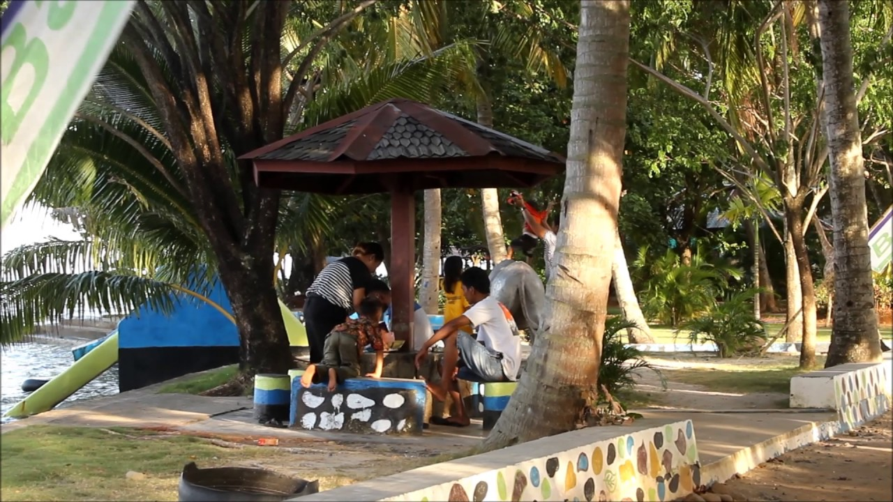

Daerah Luwu Raya yang merupakan bagian dari Sulawesi Selatan ini menjadi daerah yang memiliki banyak objek wisata yang menarik. Bahkan tidak hanya menarik wisatawan dalam negeri saja, bahkah hingga manca negara. Meskipun memiliki banyak objek wisata, lantas tidak membuat objek wisata yang ada diabaikan begitu saja. Justru dirawat dan dijaga agar selalu memiliki keindahan yang terjaga atau bahkan akan semakin cantik.
Dan salah satu dari sekian banyak wisata yang ada di Luwu Raya yang terjaga adalah Pantai Labombo di Kota Palopo. Pantai satu ini dikelola oleh seseorang yang dikenal dengan nama Pak Max. Objek wisata ini sudah ada sejak tahun 2006 lalu dan kemudian dikelola oleh MAX Production di 2010 awal. Pengelolaan ini terlihat dengan adanya rehabilitasi pada pantai karena pernah terserang abrasi yang membuatnya perlu pembangunan.
 Pesonanya yang tidak kalah cantik dengan pantai lainnya adalah pemandangan matahari terbenam. Semburat warna jika yang berpadu dengan suara deburan ombak pastinya menjadi pemandangan yang sangat beharga. Bahkan banyak wisatawan yang sengaja menunggu momen ini untuk melihat panorama yang memukau. Panorama malam hari ini di pantai Labombo juga sangat cantik dan membuat Anda enggan pulang.
Mereka yang datang untuk menikmati senja juga akan menunggu hingga malam hari. Entah untuk bersantai atau untuk menghabiskan waktu. Lampu lampu dibuat berjajar tergantung membuat pemandangannya makin memukau. Belum lagi hadirnya lapak lapak penjual yang akan menambah suasananya semakin semarak. Pengunjung bisa menikmati berbagai kudapan yang bisa dibeli di lapak lapak yang ada.